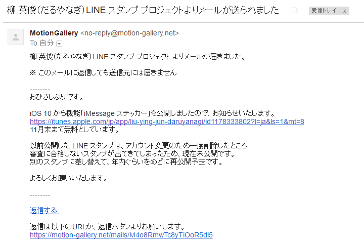

あのフリー素材「だるやなぎ」が iPhone でも！ 知らないうちに「iMessage ステッカー」が公開
公開日：

さっきこんなメールがきて、部屋の隅で震えている。いつの間にこんなプロジェクトが進んでいたんだ……orz（「いいよ」って言ったのをすっかり忘れていただけみたいだけど

よかったら使ってあげてください。11月末までは無料らしいです！ あと、iMessage ってあんまり使ったことないんですけど、便利なの？ 優しいお姉さんがいたら教えてくれるとうれしいです。
@daruyanagi 使えた。便利……なのかな？ pic.twitter.com/xD2CSdw3Z4
— 私は穀潰しキラー (@daruyanagi) 2016年11月23日